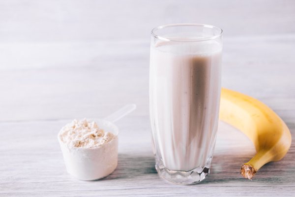
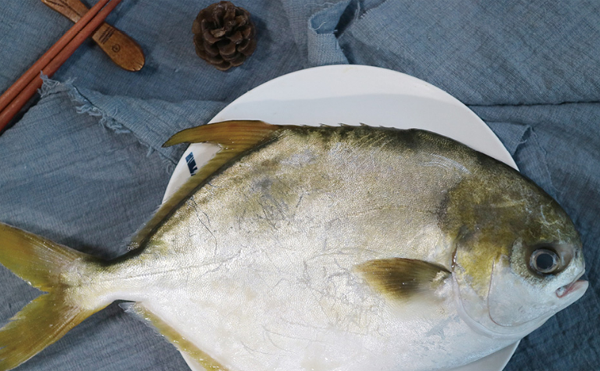
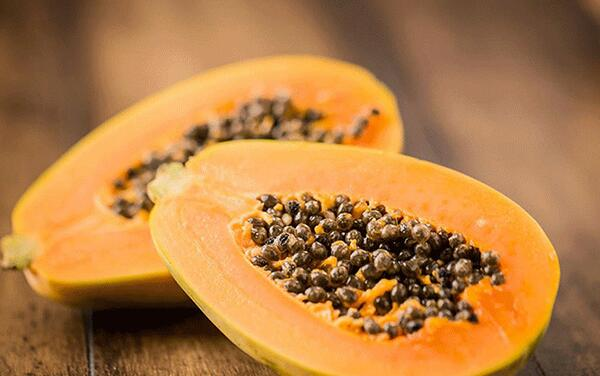

原文连接:https://www.daquan.com/post/12911.html
燕窝是非常珍贵的滋补的药材，燕窝里含有丰富的蛋白质和多种氨基酸，将燕窝自己单独炖就有很高的营养价值了。如果觉得清炖燕窝味道不好的，可以将燕窝和红枣或者冰糖一起炖，也可以两个都放。除此之外，还可以用燕窝和木瓜一起炖，燕窝还可以和牛奶、椰奶、燕麦以及鸡汤、鱼汤一起炖。
功效不同炖煮燕窝的方法不同
1、燕窝清炖
燕窝本身就是滋补的名贵药材，并且燕窝自身就有着很好的抗衰老、抗氧化的功效。所以燕窝直接清炖就有着很好的营养价值。如果是糖尿病患者，最好食用清炖的燕窝，这样既有滋补身体的功效，还不会影响血糖。
2、燕窝和冰糖、红枣
燕窝在清炖时，如果觉得口感不好的可以加入红枣和冰糖。如果口味是不太喜欢甜的，可以加入两颗红枣，红枣的味道比较甜。像糖尿病患者也可以食用红枣来改善燕窝的口感。爱吃甜的可以放入冰糖，也可以红枣和冰糖都放，能够将燕窝味道变的更好。
3、燕窝和牛奶、椰奶

燕窝和牛奶、椰奶一起炖是将牛奶和椰奶代替燕窝中的纯净水，直接炖煮。如果使用牛奶和椰奶，比较是和失眠的患者使用，长期失眠的患者可以在晚上使用椰奶和牛奶来炖煮燕窝，睡前食用，可以改善睡眠。
4、鸡汤、鱼汤炖燕窝

孕妇可以使用鸡汤、鱼汤来炖燕窝，鸡汤和鱼汤有着丰富的营养，炖燕窝可以帮助增强燕窝的营养。用鸡汤和鱼汤炖燕窝，燕窝的口感也更好一些。但是要注意鸡汤和鱼汤的清淡以及原汁原味是非常重要的，这样才能保证营养的不流失。
5、燕窝和木瓜

女性还可以将燕窝和木瓜一起炖，有着丰胸的功效。木瓜本身就有丰胸的作用，燕窝有着丰富的胶原蛋白，将燕窝和木瓜一起炖服，对女性丰胸是非常好的。
燕窝炖煮的注意事项
1、 要使用纯净水
炖燕窝要注意，洗燕窝还有炖燕窝的时候要使用纯净水，这是因为自来水和矿泉水里面都有大量的矿物质会破坏燕窝中的营养。所以一定要用纯净水。
2、 鸡汤不能太油

还要注意鸡汤不能太油，因为燕窝本身就不易消化，如果使用太油的鸡汤炖燕窝，会导致消化不良，营养不吸收。油太大，身体虚弱的人还会引起身体的不适。
结语：通过上文的介绍，相信大家都知道了不一样的需求，炖燕窝的食材是不一样的。如果是孕妇以及生产之后的，使用鸡汤或者鱼汤炖燕窝最好。